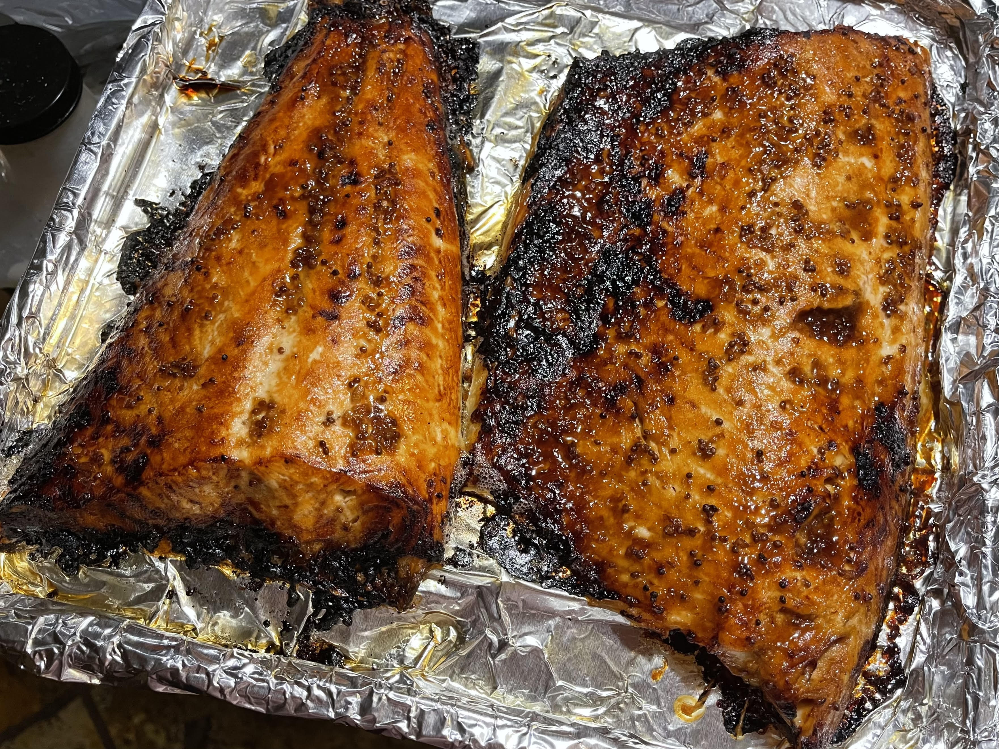

Savory Salmon

Roasted Salmon with savory sauce
Ingredients
- Uncooked salmon
- 1-2 tbsp minced garlic
- soy sauce
- dijon mustard
- minced ginger
- honey
Steps
- In 400 degree preheated over or toaster oven, roast your salmon for 8-11 minutes on oiled cooking sheet or parchment paper.
- Meanwhile, mix all other ingredients to create sauce.
- Pull baking sheet, and cover the piece(s) of salmon thoroughly with the sauce.
- Roast another 5-7, or until desired glaze/texture.
Back to Home